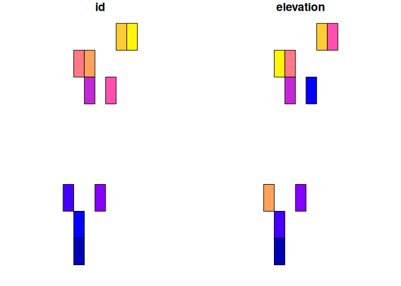
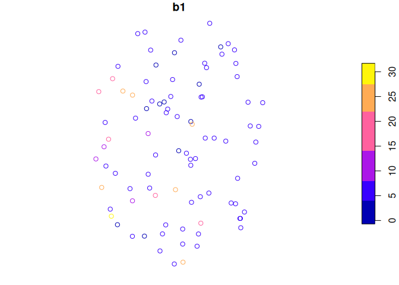
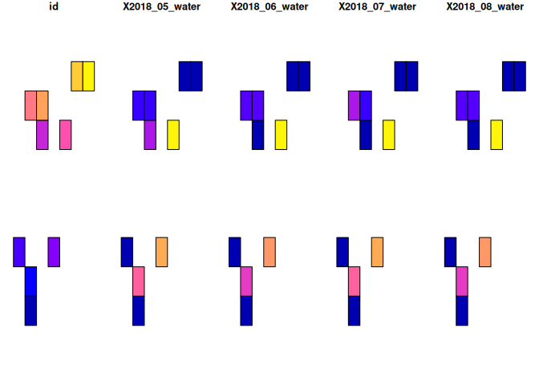
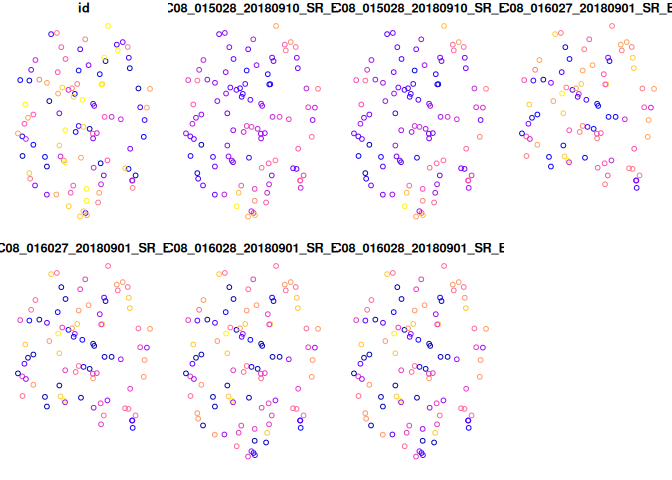

Goal
Learning Earth Engine (though I highly recommend it), can be a bit of overhead if you just need to, for example, sample a land cover product for a collection of points. Great packages like sf and terra exist in the R ecosystem for sampling from rasters, but Earth Engine (and its user community) offers an incredible resource of data sets (see below) that can be accessed without downloading any large files to your local machine. With that in mind, this project combines targets and rgee with a couple simple helper functions, to make simple operations with Earth Engine easier. We won’t cover anywhere near the full potential of Earth Engine, just things like sampling images or image collections with different types of features (for now).
Working with Earth Engine through the Python package (or through rgee which also goes through the Python package via reticulate) has one main challenge compared to the JavaScript API for Earth Engine: setup. See below for steps that worked for me. You’ll first need to install system dependencies, then install some R packages and authenticate with Earth Engine. renv is used to track required R and Python packages.
Open an issue, submit a PR, or otherwise get in touch if you have any thoughts or would like to contribute. Thanks!
Usage
This repository is a template repository, so you can select “Use this template” to start a new project quickly with the setup and example targets workflow.

Then see the Setup section below for installing system and R dependencies.
Outputs
Sample image with polygons
For example, extract the maximum elevation in each polygon (“elevation”):
tar_load(sample_image_with_polys)
head(sample_image_with_polys)## Simple feature collection with 6 features and 2 fields
## Geometry type: POLYGON
## Dimension: XY
## Bounding box: xmin: -74.79963 ymin: 46.389 xmax: -74.74875 ymax: 46.5133
## Geodetic CRS: WGS 84
## id elevation geometry
## 1 1 275 POLYGON ((-74.78945 46.389,...
## 2 2 305 POLYGON ((-74.78945 46.4067...
## 3 3 372 POLYGON ((-74.79963 46.4245...
## 4 4 332 POLYGON ((-74.7691 46.42452...
## 5 5 345 POLYGON ((-74.77927 46.4955...
## 6 6 304 POLYGON ((-74.75892 46.4955...
plot(sample_image_with_polys)
Sample image with points
For example, extract the leading tree species at each point (“b1”):
tar_load(sample_image_with_points)
head(sample_image_with_points)## Simple feature collection with 6 features and 2 fields
## Geometry type: POINT
## Dimension: XY
## Bounding box: xmin: -74.83523 ymin: 46.41165 xmax: -74.6694 ymax: 46.50514
## Geodetic CRS: WGS 84
## id b1 geometry
## 1 1 6 POINT (-74.6694 46.49735)
## 2 2 6 POINT (-74.67346 46.41165)
## 3 3 6 POINT (-74.72348 46.4236)
## 4 4 NA POINT (-74.82548 46.50514)
## 5 5 26 POINT (-74.83523 46.43082)
## 6 6 6 POINT (-74.7969 46.48492)
plot(sample_image_with_points['b1'])
Sample image collections with polygons
For example, extract the monthly water detection within polygons (2 = water, 1 = land)
tar_load(sample_image_collection_with_polygons)
head(sample_image_collection_with_polygons)## Simple feature collection with 6 features and 5 fields
## Geometry type: POLYGON
## Dimension: XY
## Bounding box: xmin: -74.79963 ymin: 46.389 xmax: -74.74875 ymax: 46.5133
## Geodetic CRS: WGS 84
## id X2018_05_water X2018_06_water X2018_07_water X2018_08_water
## 1 1 1.000000 1.000000 1.000000 1.000000
## 2 2 1.019470 1.016935 1.016656 1.016656
## 3 3 1.000000 1.000000 1.000000 1.000000
## 4 4 1.173842 1.167409 1.166206 1.167010
## 5 5 1.001608 1.000000 1.000000 1.000000
## 6 6 1.221556 1.211256 1.205370 1.198938
## geometry
## 1 POLYGON ((-74.78945 46.389,...
## 2 POLYGON ((-74.78945 46.4067...
## 3 POLYGON ((-74.79963 46.4245...
## 4 POLYGON ((-74.7691 46.42452...
## 5 POLYGON ((-74.77927 46.4955...
## 6 POLYGON ((-74.75892 46.4955...
plot(sample_image_collection_with_polygons)
Sample image collections with points
For example, Landsat 8 bands at each point:
tar_load(sample_image_collection_with_points)
head(sample_image_collection_with_points)## Simple feature collection with 6 features and 7 fields
## Geometry type: POINT
## Dimension: XY
## Bounding box: xmin: -74.83523 ymin: 46.41165 xmax: -74.6694 ymax: 46.50514
## Geodetic CRS: WGS 84
## id LC08_015028_20180910_SR_B1 LC08_015028_20180910_SR_B2
## 1 1 29472 29089
## 2 2 29612 29295
## 3 3 30448 30169
## 4 4 30526 30103
## 5 5 27204 26891
## 6 6 28946 28574
## LC08_016027_20180901_SR_B1 LC08_016027_20180901_SR_B2
## 1 32351 32438
## 2 30442 30326
## 3 26421 26480
## 4 14816 14795
## 5 34922 34877
## 6 37775 37170
## LC08_016028_20180901_SR_B1 LC08_016028_20180901_SR_B2
## 1 32223 32290
## 2 30206 30091
## 3 26532 26603
## 4 15209 15266
## 5 34706 34309
## 6 37225 36657
## geometry
## 1 POINT (-74.6694 46.49735)
## 2 POINT (-74.67346 46.41165)
## 3 POINT (-74.72348 46.4236)
## 4 POINT (-74.82548 46.50514)
## 5 POINT (-74.83523 46.43082)
## 6 POINT (-74.7969 46.48492)
plot(sample_image_collection_with_points)
Note - these are spread wide, where each measure is a new column. That means they will likely need to be restructured for further processing.
Setup
System dependencies:
- gcloud (https://cloud.google.com/sdk/docs/install)
- python >= 3.5
- earthengine python package
First time using this project:
Sys.setenv(DOWNLOAD_STATIC_LIBV8 = 1)
install.packages('renv')
renv::restore()
rgee::ee_Authenticate()
rgee::ee_Initialize(drive = TRUE)Dependencies
System dependencies above.
Details for rgee here: https://r-spatial.github.io/rgee/articles/rgee01.html#installation
rgee
The “first time” section above should get you set up, but if you are starting from scratch:
Install:
library(rgee)
ee_install(py_env = 'rgee')Authenticate:
Check:
ee_check()Renv + python:
renv::use_python(reticulate::py_discover_config()$python)
renv::snapshot()